10 главных тенденций сезона весна-лето 2018
Cтранные плащи, пластик, вареный деним, зеленый неон, поп-арт, перья и глиттер
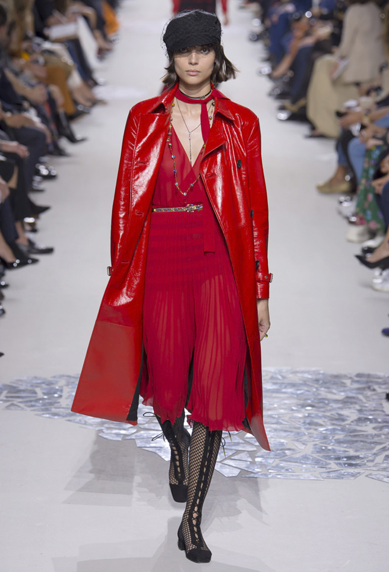
1. Странный плащ
В моде — странные экземпляры: плащи-палатки,
как у Céline, сшитые из двух и вывернутые наизнанку, скрещенные с джинсовкой,
как у Balenciaga, или с парчовым платьем, как у Alexander McQueen.
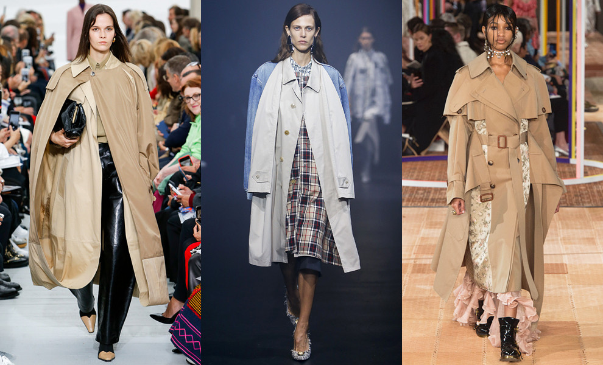
2. Розовый с оранжевым
Непривычные глазу цветовые сочетания привлекают много
внимания. Весной будем раздражать взгляды тандемом розового
с оранжевым. Выглядит, кстати, очень аппетитно.
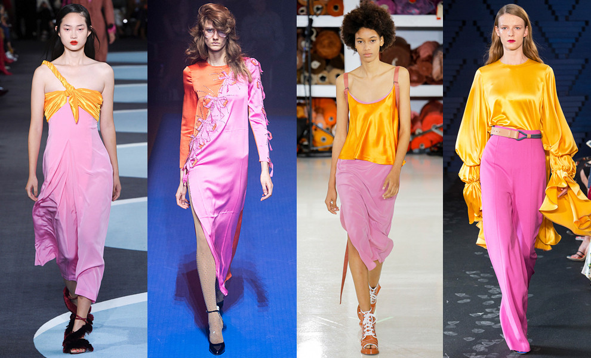
3. Бахрома
Этой осенью мы больны американой. Там бахрома тоже есть.
Но к весне, как говорил Шарик, «лохматость повысится».
В моду входит длинная, тяжелая бахрома в несколько слоев.
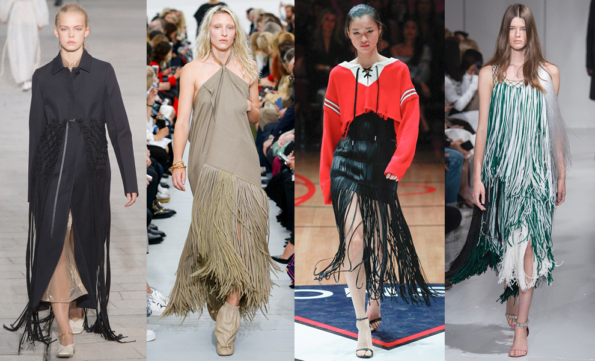
4. Хищный принт
Дизайнеры один за другим отказываются от искусственного меха,
но не от животных принтов. Их на подиумах было много — вот вам,
пожалуйста, верный признак ностальгии по 80-м. «Охотимся» на леопарда,
тигра и зебру.
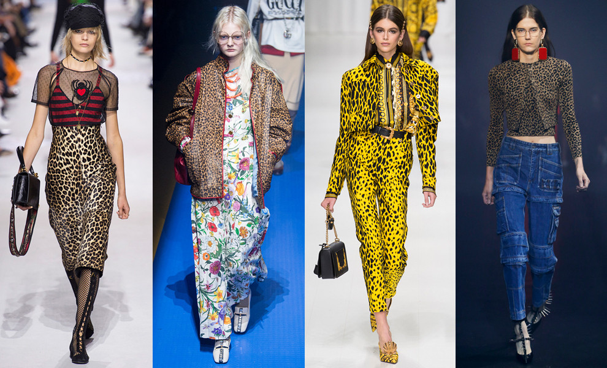
5. Пластик-фантастик
Еще одна «природозащитная» тенденция — пластик (перерабатываемый, конечно).
Синтетические материалы вытесняют натуральные даже в коллекциях птиц такого
высокого полета, как Chanel, Valentino и Balmain.
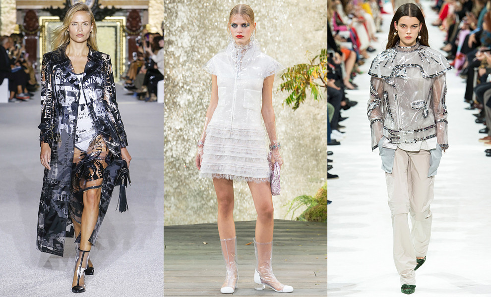
6. Поп-арт
Искусство и мода неразлучны, поп-арт так точно всегда где-то рядом.
Миучча Прада снова взялась за комиксы, Рэи Кавакубо — за детские игрушки
в духе Такаси Мураками, а Донателла Версаче — за уорхоловские портреты Мэрилин Монро.
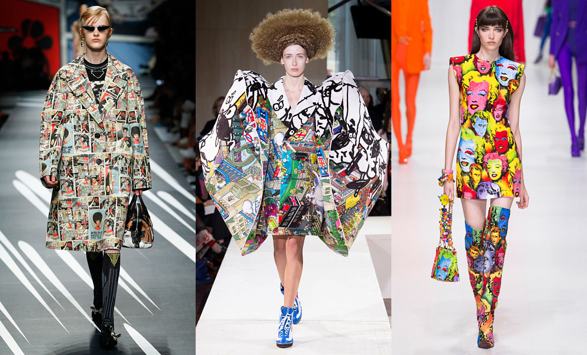
7. Варенки
Весной нам придется вспомнить позабытую технику отваривания джинсы.
Мода на вареный деним грядет. Это уже чистой воды 80-е. Вспоминают былые
времена Stella McCartney, Balenciaga и Givenchy.
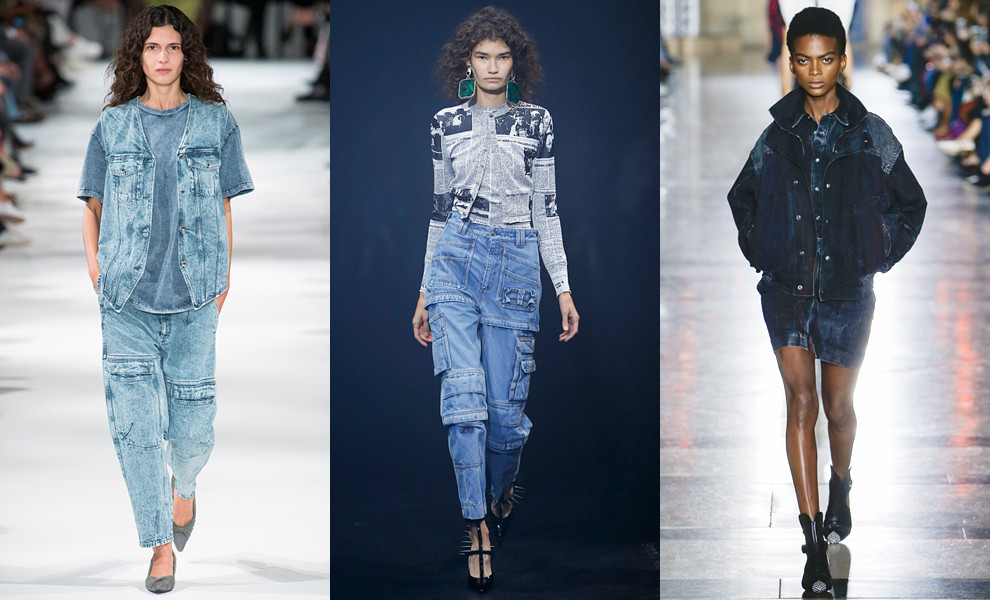
8. Зеленый неон
То, что зеленый метит в главные цвета весны, мы смекнули сразу после Нью-Йорка.
В Милане и Париже он приобрел неоновый оттенок — вырвиглаз, как у Balenciaga,
Veronique Leroy и Gucci. Только помните, что цвет сложный и идет не всем.
Есть риск «потерять лицо» на фоне этой зелени.
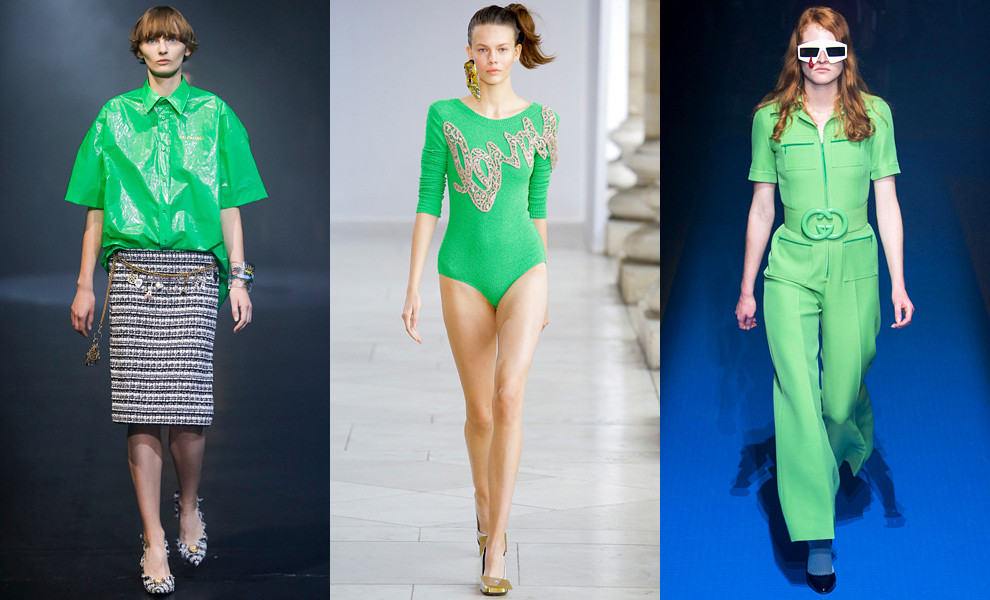
9. Глиттер
Самый праздничный из всех. Сверкать, как диско-шар, а то и ярче,
предлагают Dolce&Gabbana, Gucci и Marc Jacobs. А мы и не против
ослепить всех на вечеринке.
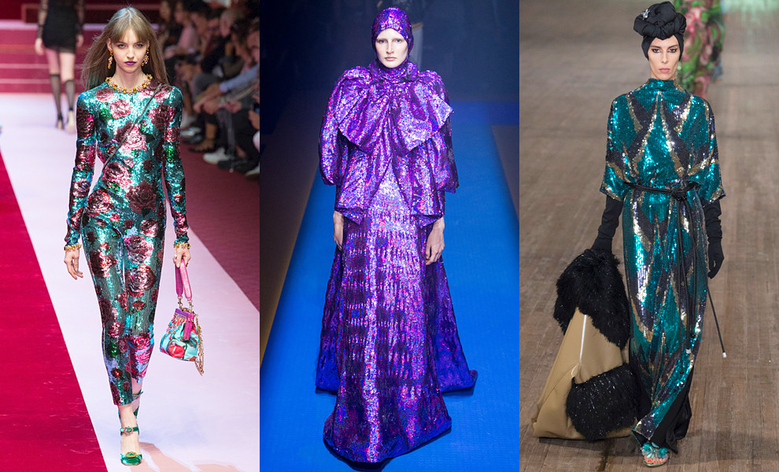
10. Сумка на пояс
Поясные сумки в моде который сезон подряд. И прекрасно, у нас на этот
счет один комментарий — удобно.
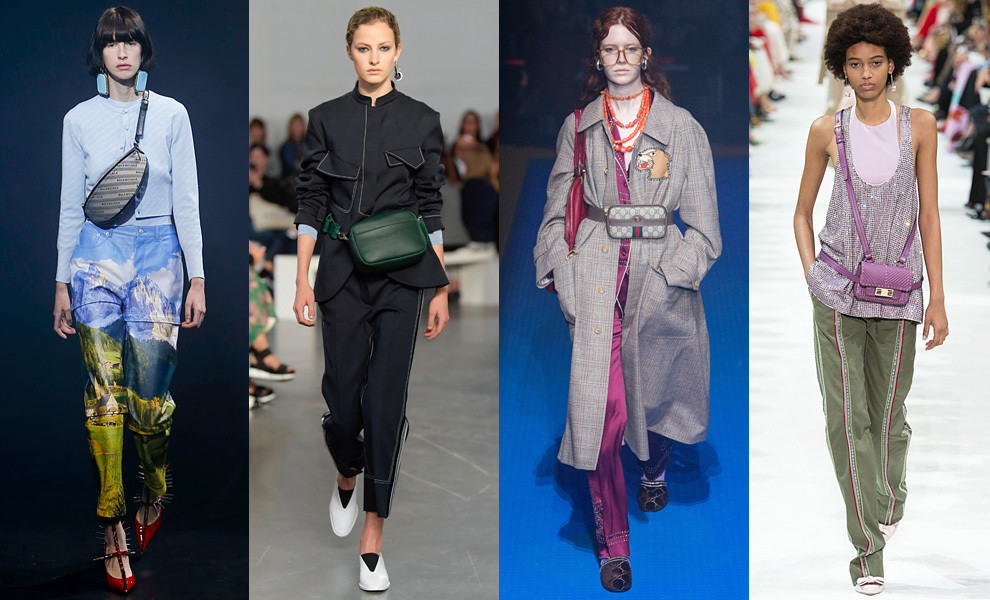
©Все права защищены.